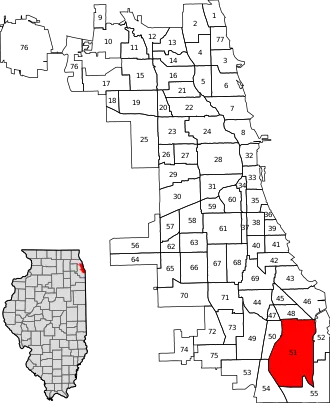

About Me
Origin
I was born April 8, 2004. I have always lived in Chicago, specifically, the South Side of Chicago (South Deering) located here:
Family
I am the oldest of 3 brothes in a family of four. We live in a two-story house with my grandma and two other aunts. We had a dog named Oreo that is unfortunately no longer with us, however, we have plenty of pictures to keep her around.
Hobbies
I enjoy:
- Videogames (Overwatch is my favorite)
- Exercise (calisthenics, meaning bodyweight only)
- Scaling (climbing buildings) and exploring abandoned buildings
Goals
Ever since I was young, I've always wanted to use and interact with computers. The amount of functions that they could serve always interested me. I was especially obsessed with cybersecurity and hacking, including groups such as Anonymous. For this reason, I hope to one day work in the field, and ultimately to run my own pen-testing firm.